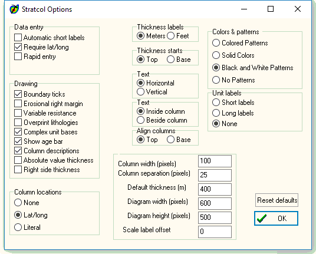

Stratcol Options Form

- Text direction: pick vertical or horizontal text for the
label files.
- Width: pick the width in pixels of the diagram.
- Erosional right margin: display a ragged erosional margin on
the right side of lithologic columns instead of
rectangular boxes.
- Variable resistance: scale the width in each unit in
proportion to its strength, instead of scaling all units
the same.
- Column labels: put the column name at the top of each
column.
- Time axis: turn the time (or thickness axis) on or off.
You can also place the units names inside the units or to the
right.
You can turn the vertical time axis on the left of the
diagram on and off, and select the tick size to be employed if
you do not like the default.
Vertical Time Axis
There can be a vertical time axis on the left margin of the diagram. On a time correlation diagram its scale will be determined by the first time label column entered, but you can manually override this selection and redraw the diagram to any time limits you desire. You toggle the axis on and off in the Options menu.
- There are four options for coloring the lithologic patterns:
- Color patterns: use color assigned to each pattern.
- Black and white patterns: use black on a white background.
- No pattern: leave units blank. If you are editing the column
boundaries, this will produce the fastest results since the
column must be redrawn after each edit. Once you have the
boundaries in the correct locations, you select one of the other
options for final display.
- Solid colors: use solid color assigned for each pattern.
- Three options for unit names within the
diagram:
- Short Names
- Long Names
- No Names
Last revision 1/18/2018